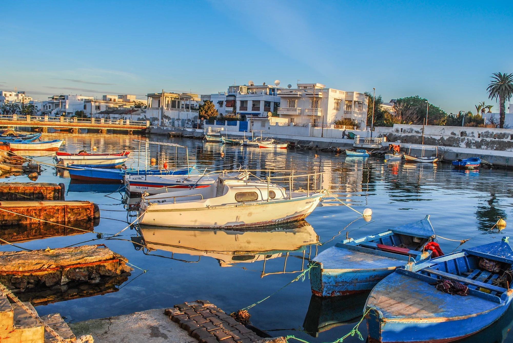

TOP BEST PLACES


is the capital and largest city of Tunisia. The greater metropolitan area of Tunis, often referred to as "Grand Tunis", has about 2,700,000 inhabitants. As of 2020, it is the fourth-largest city in the Maghreb region (after Casablanca, Algiers and Tripoli) and the sixteenth-largest in the Arab world. Situated on a large Mediterranean Sea gulf (the Gulf of Tunis), behind the Lake of Tunis and the port of La Goulette (Ḥalq il-Wād), the city extends along the coastal plain and the hills that surround it. At its core lies its ancient medina, a World Heritage Site. East of the medina through the Sea Gate (also known as the Bab el Bhar and the Porte de France) begins the modern city, or Ville Nouvelle, traversed by the grand Avenue Habib Bourguiba (often referred to by media and travel guides as "the Tunisian Champs-Élysées"), where the colonial-era buildings provide a clear contrast to smaller, older structures. Further east by the sea lie the suburbs of Carthage, La Marsa, and Sidi Bou Said. As the capital of the country, Tunis is the focus of Tunisian political and administrative life and also the center of the country's commercial and cultural activities.